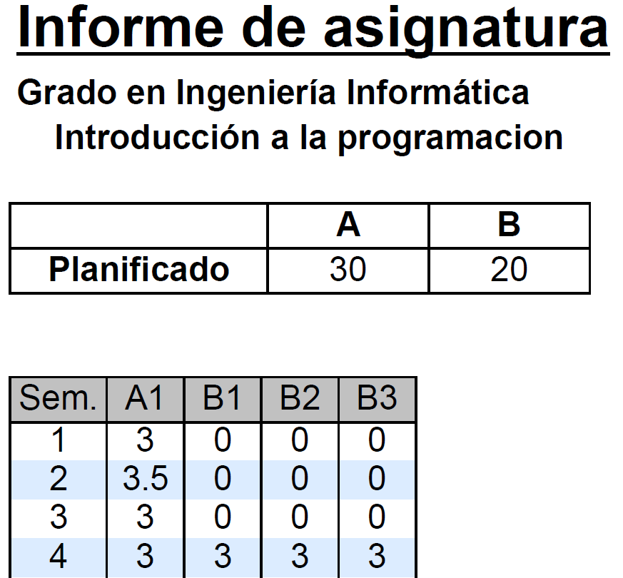

Aplicación web para la gestión
y planificación docente de los grados
Daniel Ignacio Salazar Recio
Ingeniería Técnica en Informática de Sistemas
Septiembre de 2011
Índice
- Introducción
- Motivaciones y justificación
- Antecedentes
- Descripción
- Planificación
- Implementación
- Herramientas
- Conclusiones y ampliaciones fututras
- Bibliografía
Introducción
Introducción
Herramienta de gestión para procesos de la Universidad
Sistema intuitivo para gestionar esos procesos
Necesidad de almacenar la información de forma organizada
Proporcionar una forma de acceder a esa información
Trabajar desde cualquier lugar
Objetivos
- Gestión de titulaciones.
- Gestión de asignaturas.
- Gestión de planificación docente.
- Gestión de calendario.
- Gestión de horarios.
- Gestión de ocupación de las aulas.
- Generación de informes.
- Gestión de copias de seguridad.
- Automatización de procesos.
Motivaciones y justificación
Motivaciones y justificación
- Ampliar conocimientos sobre desarrollo web.
- Saber que la aplicación va a tener un uso real.
- Posibilidades futuras de la aplicación.
- Carencia de una aplicación de este tipo.
Antecedentes
Antecedentes
Hojas de cálculo con la planificación docente.
Hojas de cálculo con los horarios.
PDFs para mostrar el horario al alumno.
Descripción
Gestiongrados
Software de gestión para ayudar a la planificación docente de las titulaciones de la ESI.
Aplicación orientada a diferentes perfiles.
Perfil administrador
- Encargado de gestión de usuarios.
- Gestión de copias de seguridad.
Perfil planificador
- Perfil central
- Gestión de entidades básicas de la aplicación (Titulaciones, asignaturas, etc).
- Gestión de planificación docente.
- Gestión de calendario.
- Gestión de horarios.
- Gestión de informes.
Perfil profesor
- Visualización de planificación docente global (Nivel titulación).
Perfil alumno
- Visualización de horarios personalizados
Gestión de la planificación
Aplicación basada en formularios y tablas.
Necesidad de algo más intuitivo para la gestión de calendario y horarios.
Gesto intuitivo: Arrastrar una asignatura a su lugar en un horario
Planificación
Duración del proyecto
De septiembre de 2010 a enero de 2012.
Fases
- Fase de aprendizaje: familiarización con PHP y aprendizaje del framework y de otras herramientas.
- Fase de análisis: identificación de los objetivos y requisitos del sistema.
- Fase de diseño: construcción del sistema en base al análisis realizado.
- Fase de implementación: desarrollo del sistema obtenido en la fase de diseño.
- Fase de pruebas: pruebas realizadas al sistema para comprobar su correcto funcionamiento.
Diagrama de Gantt (Parte 1)
Diagrama de Gantt (Parte 2)
Implementación
Arquitectura del sistema
Patrón Modelo Vista Controlador (MVC).
Separación de datos, interfaz y lógica de negocio.
Facilidad para mantener, y escalar la aplicación.
Modelo
Representación de la información.
Interactúa con la base de datos.
No sabe nada del resto de capas.
Vista
Presentación de los datos al usuario.
Utiliza el modelo para componer la interfaz.
Controlador
Intermediario entre modelo y vista.
Responde a eventos.
Recoge la entrada del usuario y la procesa.
Invoca peticiones al modelo y pasa los datos a la vista para renderizarla.
Implementación MVC
Demasiado trabajoso implementar desde cero.
¿Por qué implementar algo que ya existe y está más que probado?
Solución: uso de un framework ya existente.
Framework
Conjunto de herramientas y guías que facilitan el desarrollo de software.
Codeigniter
Implementación de MVC para PHP.
Proporciona multitud de herramientas:
- Sistema de seguridad con filtrado de XSS
- Motor de renderizado de vistas.
- Multitud de librerías y helpers útiles para ayudar al desarrollo.
- Sistema propio de enrutamiento de URIs.
- Sistema de caché.
- Posibilidad de extender el núcleo mediante hooks o herencia de clases.
- Clase de base de datos con uso de Active Record modificado.
Active Record
Implementación distinta a la habitual. Se decide no usarla.
En su lugar, se reemplaza con Doctrine Project 1.2
Doctrine
- Mejor implementación de Active Record (más pura).
- Validaciones integradas.
- Construcción de tablas a partir de los modelos.
- Filtrado de SQL Injection.
Vistas
Se decide usar XHTML al estar recomendado por la W3C y ser un estándar.
Para mejorar la interacción se hace necesario el uso de un lenguaje de programación de cliente.
Javascript
Es el lenguaje más usado en el lado del cliente.
Pocas alternativas (CoffeeScript, Dart).
Problema: engorroso y hay que escribir mucho para conseguir lo que queremos.
Librerías de JavaScript
Una de las más utilizadas es jQuery.
Se pueden aplicar multitud de efectos con muy pocas líneas.
Utilización muy sencilla de peticiones AJAX.
Plugin FullCalendar
Necesario para la interacción en la construcción de horarios y calendario.
Es justo lo que necesitamos, plugin para programar eventos en un calendario.
Capaz de recibir datos del servidor y plasmarlos en el horario/calendario.
Exportación/importación de datos
Titulaciones y asignaturas: Entidades simples, se utiliza YAML.
YAML
Formato para representar objetos en texto plano (Serialización).
Formato leíble por una persona.
Soportado nativamente por Doctrine.
YAML
Asignatura:
Asignatura_7:
codigo: '123'
nombre: 'Análisis y diseño de algoritmos I'
abreviatura: ADAI
creditos: '6'
materia: Algoritmia
departamento: 'Lenguajes y sistemas'
curso: '2'
semestre: primero
id_titulacion: 1
Importación de planificación docente
Entidades más complejas. Se utiliza CSV.
PHP tiene soporte nativo para CSV.
Editable con Excel o LibreOffice, o bien con un editor de texto plano.
Se parsean los archivos manualmente y se van creando los objetos.
Estructura
id_asignatura, id_actividad, horas, horas_semanales, grupos, alternas, id_curso
1,1,30,3,3,0,1
Generación de informes
Dependiendo de la necesidad.
Si hay necesidad de editarlos posteriormente, se usa CSV. Por ejemplo, exportación de horarios.
Si no hay necesidad de editarlos, se usa PDF, mediante la librería FPDF. Por ejemplo, informes de asignatura.
FPDF: Fácil de utilizar. Resultados vistosos con pocas líneas de código.
Ejemplo de informe

Herramientas
Herramientas
Forja del proyecto
Alojado en GitHub, usando el sistema de control de versiones Git.
Proyecto público.
Documentación: PHPDoc
Documentación legible del código. Al estilo JavaDoc.
Generable mediante cualquier IDE. Por ejemplo NetBeans.
El formato de salida es HTML.
Conclusiones y ampliaciones futuras
Conclusiones
Los objetivos planteados al principio se han cumplido.
Se esperaba una menor duración.
Primera aplicación web desarrollada.
Primer proyecto de estas características en solitario.
Posibles ampliaciones
Extenderlo a otras facultades o universidades.
Posibilidad de que un alumno proponga modificaciones a un horario.
Integración con LDAP de la UCA para el login de usuarios.
Bibliografía
Bibliografía
Demostración
Gracias por su atención
¿Preguntas?